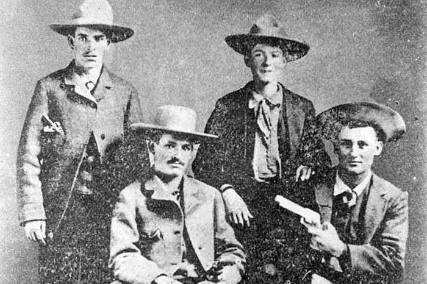

Sam Bass:
 Above: Sam Bass
Above: Sam Bass
Samuel Bass was an American outlaw, train robber, and an outlaw gang leader who was active in primarily
Texas along with Western Nebraska from around 1877 to 1878. Being most notorious for robbing San Francisco’s
Union Pacific Railroad gold train in 1877, Sam Bass is noted as “Texas’s Beloved Bandit” and despite his short
career, he is regarded as one of the most infamous outlaws of the Old west.
Early life:
Sam Bass was born on July 21st, 1851 on a farm near Mitchel Indiana to parents Daniel Bass and Elizabeth Jane
Sheeks Bass. He was orphaned at the age of either 13 or 14 and moved in with and was raised by his Uncle who was
abusive. He lived with his abusive uncle for 5 years before running away from home in 1869 at the age of either
18 or 19. For about one year or less Sam worked at a sawmill in Rosedale, Mississippi before taking off to Denton,
Texas were he would be employed by Sheriff W.F. Eagan as a farmhand. During this time Sam would spend his time
milking the cows, helping out with the horses, cutting firewood and doing other farm chores. He would also become
acquainted with the trails and back roads of the Texas area due to his position as a teamster for a short time which
would later help him in his life as an outlaw.
In 1874 Sam would pursue horse racing after leaving Sheriff Eagen and purchasing a mare (which would be known
as the “Denton Mare”) with his earnings from being a farmhand. After living off the proceeds from his winnings in
horse racing for a couple of years, Sam and his partner Joel W. Collins–whom he’d met through his operations in
horseracing–would earn around $8,000 from cattle driving for ranchers in San Antonio, Texas in 1876. The cattle
driving operation of theirs led them to Nebraska where they sold the cattle. The two would spend and squander
most of their earnings from the job on gambling in the gold rush town of Deadwood In the Black Hills region
of South Dakota. This left the two broke.
Life as an outlaw:

Above: Picture of Sam Bass (far left), John Gardner (middle), and Joe & Joel Collins (seated, right) in 1876 in Dallas, Texas.
In 1877, now broke, Sam Bass along with Collins–after attempting but being unsuccessful with working as
freighters–would turn to a life of crime; forming an outlaw gang and starting to rob stagecoaches. This would
mark the start of Sam Bass’s life as an outlaw. Then on September 18th that same year Sam Bass and his gang as
a band of six would ride into Big Springs, Nebraska and pull off robbing the Union Pacific Railroad gold train
from San Francisco, making off with $60,000 worth of gold. This heist is notably one of the biggest train robberies
committed in the USA. After the heist and dividing up the loot, the group of six split up into pairs and went off
in different directions. In the next weeks Sam Bass fled to Texas and was able to disguise himself as a farmer to
evade the law, his partner Joel Collins however would be killed while resisting arrest at Buffalo Station in Kansas.
In Texas Sam would form a new gang and continue robbing stagecoaches, in 1878 during the spring successfully
holding up four trains 25 miles from Dallas, Texas. These robberies–which actually gave the gang little money–would
leave them to be hunted by a special company of Texas Rangers headed by Captain Junius Peak. Sam and his gang evaded
the pursuing Texas Rangers for 4 months in an event that would be known as the “Bass war” which made the gang legendary
in the Old West. Sam was able to evade the rangers until Jim “Judas” Murphy–a member of his own gang–turned informant
after being threatened by the Texas Rangers who were withholding medical care from his ill father Henderson. Betraying
him, Jim would write to Maj. John B. Jones to help set up an ambush of Sam’s outlaw gang in Round Rock, Texas where they
were planning on robbing the Williamson County Bank.
 Above: Sam Bass's grave in Round Rock Cemetary.
Above: Sam Bass's grave in Round Rock Cemetary.
On July 19th, 1878 while scouting the area around the bank before the heist that day (also joined by Jim Murphy),
Sam Bass and his gang were noticed by Sheriff A. W. Grimes who asked them to turn in their weapons before the gang
promptly shot and killed him. This started off a gunfight in which Sam was wounded while attempting to flee, being
shot by the Texas Rangers Sergeant Richard Ware and George Herold during the fight. The next day Sam was found lying
in a pasture just North of Round Rock. He was brought into custody before dying of his wounds on July 21st which was
the day of his 27th birthday. Sam Bass would be buried in Round Rock, in what is presently known as the Round Rock Cemetery.
What made him infamous:
Despite his short career as an outlaw, Sam Bass is considered
as one of the most infamous outlaws of the Old West.
Aspects of his career and life which made him infamous include:
His daring and successful train and stagecoach robberies in Texas and Nebraska.
Notably, his robbing of the Union Pacific Railroad gold train in 1877.
His reputation as a lucky, bold, and cunning outlaw with a Robin Hood-esq image and persona
due to his defiance of authority, and targeting of more powerful banks and railroads owned by the rich.
He was generally well-liked by common folk at the time and folk lore depicts him as a generous outlaw.
His evasion of the Texas Rangers in 1878 during the “Bass War”
His final shootout in Round Rock which brought him to his end.
Like other outlaws, after his death the media would solidify his place as a legend of the west through
dramatic representations and many portrayals in books, shows, films, and songs such as John Denton's
“The Ballad of Sam Bass” which emerged shortly after Sam’s death in 1878.
His impact in the Old West:
Sam Bass’s impact in the Old West was overall as an infamous train and stagecoach robber who was well liked
by people in Texas for his Robin Hood-like outlaw persona, gaining him names such as “Texas’s Beloved Bandit” and
“Robin Hood on a Fast Horse”. The town of Round Rock was impacted the most by Sam Bass as the culmination of his
outlaw career in the shootout on July 19th would give a new historical identity for the town and unify it under its
distinguishable title as the place where an infamous outlaw was killed. To this day Round Rock has an annual Frontier
Days festival in which the Sam Bass Theatre association performs a reenactment of the Round Rock shootout in 1878.
There are also many roads in Round Rock, Denton, and overall Texas named after Sam and annually on the third Saturday
in July the people of Rosston, Texas celebrate Sam Bass Day.